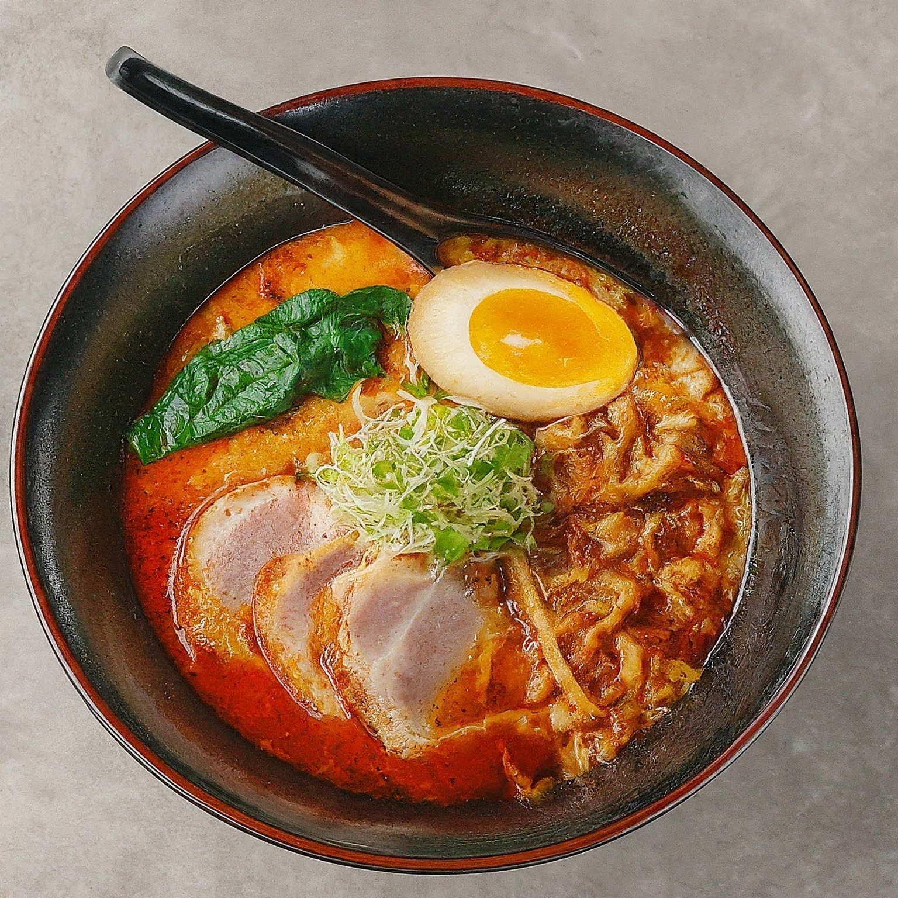

Spicy Ramen
Ingredients (Base Recipe):
2 servings of instant ramen noodles (or 200g fresh ramen noodles)
4 cups chicken broth (or vegetable broth for a vegan option)
1 tablespoon soy sauce
1 tablespoon sriracha (or more to taste)
1 tablespoon rice vinegar
1 teaspoon sesame oil
1 clove garlic, minced
1 inch ginger, minced
1 scallion, thinly sliced (green parts for garnish)
Optional protein (cooked chicken, shrimp, tofu)
Optional vegetables (sliced mushrooms, baby bok choy, bean sprouts)
Spicy Gochujang Ramen (Increased Spice):
In addition to the base recipe ingredients, you'll need:
1 tablespoon gochujang (Korean chili paste)
½ teaspoon red pepper flakes (adjust to your spice preference)
Instructions:
Prepare Broth: In a large pot, bring the chicken or vegetable broth to a simmer over medium heat. Add soy sauce, sriracha, rice vinegar, sesame oil, garlic, and ginger. Let simmer for 5 minutes to allow flavors to meld.
Cook Noodles: If using instant ramen, follow package instructions for cooking noodles. Drain the noodles, reserving about ½ cup of the cooking water. If using fresh ramen, cook according to package instructions in a separate pot of boiling water. Drain and set aside.
Add Protein and Vegetables (Optional): If using protein or vegetables, add them to the simmering broth and cook until heated through (usually 2-3 minutes for shrimp or chicken, slightly longer for tofu or vegetables).
Combine and Serve: Add cooked ramen noodles and any reserved cooking water to the pot with the broth. Toss to coat the noodles in the flavorful broth.
Garnish and Enjoy: Ladle the spicy ramen into individual bowls. Garnish with thinly sliced scallions (green parts) and a drizzle of additional sriracha or chili oil (optional).
Spicy Garlic Ramen (Milder Spice):
In addition to the base recipe ingredients, you'll need:
1 teaspoon chili flakes (adjust to your spice preference)
1 tablespoon honey or brown sugar
Instructions:
Follow steps 1-3 from the Gochujang Ramen recipe above.
Combine and Simmer: Add cooked ramen noodles and any reserved cooking water to the pot with the broth. Toss to coat the noodles and simmer for an additional 1-2 minutes to allow the flavors to further develop.
Garnish and Enjoy: Ladle the spicy ramen into individual bowls. Garnish with thinly sliced scallions (green parts) and sesame seeds.
Tips:
Feel free to adjust the amount of sriracha, gochujang, or chili flakes to achieve your desired level of spice.
For a richer broth, add a tablespoon of miso paste along with the other seasonings.
Get creative with toppings! You can add a soft-boiled egg, crumbled seaweed (wakame), or your favorite kimchi.
Leftovers can be stored in an airtight container in the refrigerator for up to 2 days. However, the noodles may become slightly mushy upon reheating.
Enjoy your delicious and customizable spicy ramen!